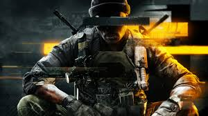
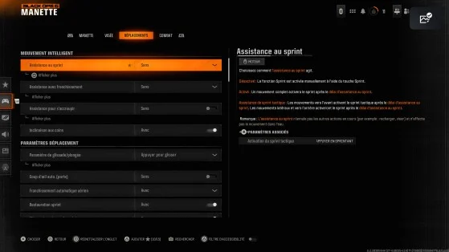

Bienvenue sur le site !
Ce site est spécialement conçu pour aider les nouveaux joueurs de **Call of Duty** à améliorer leurs performances, sans avoir recours à des techniques de triche ou de "camping". L'objectif ici est de vous fournir des conseils pratiques et des ajustements de réglages qui vous permettront de progresser naturellement dans le jeu.
Nous nous concentrons sur des recommandations honnêtes : des configurations de jeu adaptées à votre style, des conseils pour optimiser vos classes d'armes, et tout cela sans utiliser de "glitchs" ou de stratégies Meta. Le but est de vous apprendre à maîtriser les armes, à développer vos compétences, et à devenir un joueur constant qui s'améliore avec le temps.
En suivant ces conseils, vous serez non seulement plus efficace en jeu, mais vous aurez aussi l'opportunité de prendre plaisir à chaque partie, tout en progressant de manière saine et équitable.
Réglages Personnalisés
Optimisez votre expérience de jeu en ajustant les paramètres à votre convenance. Chaque joueur a des besoins uniques, que ce soit pour la réactivité des commandes ou pour les réglages visuels afin de mieux voir les ennemis dans chaque situation.
Dans cette section, nous vous guiderons à travers les réglages les plus importants, du contrôle de la sensibilité de la souris aux ajustements graphiques qui amélioreront votre visibilité et votre confort de jeu. Peu importe votre style de jeu, ces conseils vous aideront à obtenir des performances optimales et une expérience fluide.
Les Meilleures Armes
Dans cette section, nous vous aiderons à découvrir les armes les plus adaptées à chaque situation sur le terrain. Que vous soyez un expert du combat rapproché ou un tireur d'élite, il est essentiel de connaître les équipements qui vous donneront un avantage stratégique.
Nous vous guiderons à travers les meilleures configurations d'armes, en vous montrant comment adapter votre arsenal à vos préférences de jeu et à chaque situation spécifique. Améliorez votre réactivité, votre précision et votre efficacité en choisissant judicieusement vos armes et accessoires.

À Propos de Moi
Je suis un joueur passionné de **Call of Duty**, toujours en quête d'amélioration et de nouvelles stratégies pour progresser. Bien que je ne sois pas un joueur professionnel, j'aime explorer chaque aspect du jeu, des réglages aux meilleures configurations d'armes, en passant par les tactiques qui permettent de performer de manière constante.
Ce site est né de mon envie de partager mes découvertes et mes conseils avec d'autres joueurs qui, comme moi, cherchent à s'améliorer sans tomber dans des techniques de triche ou d'anti-jeu. L'objectif est de devenir meilleur tout en respectant l'esprit du jeu.